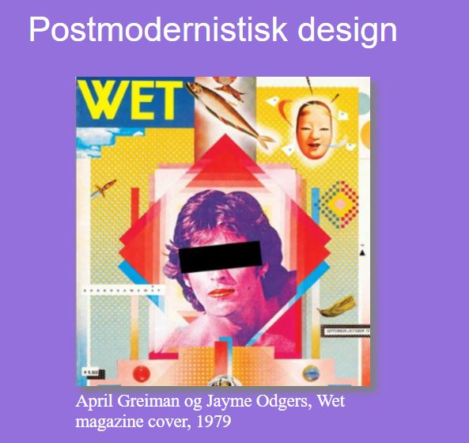
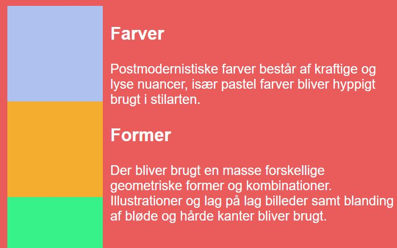
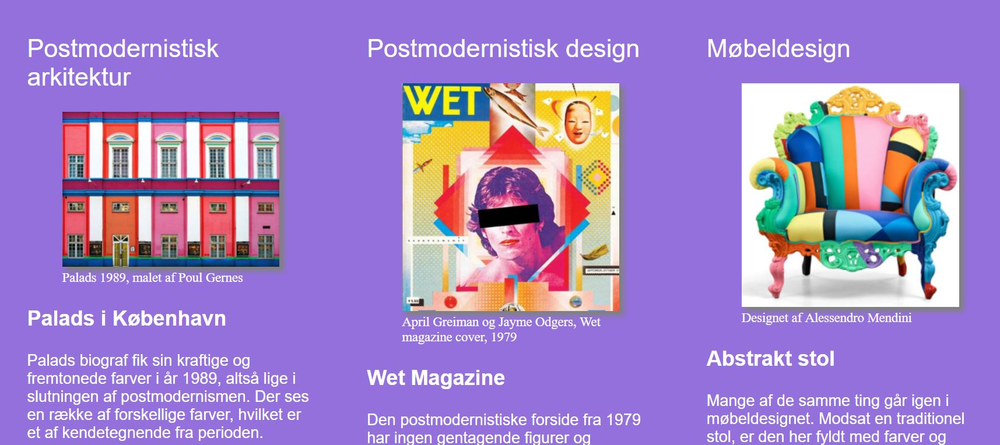
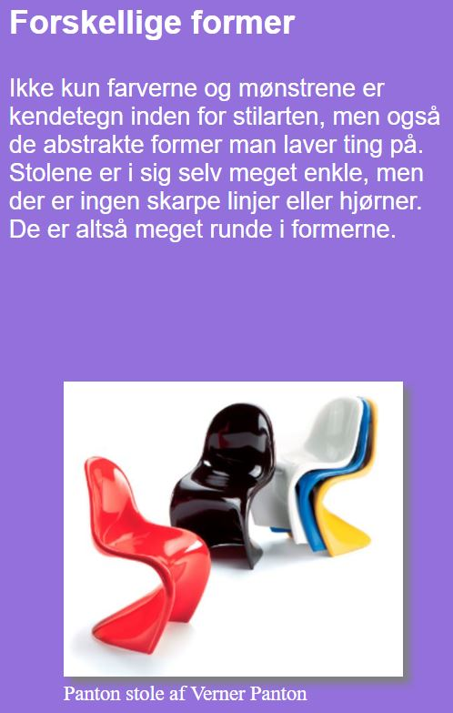
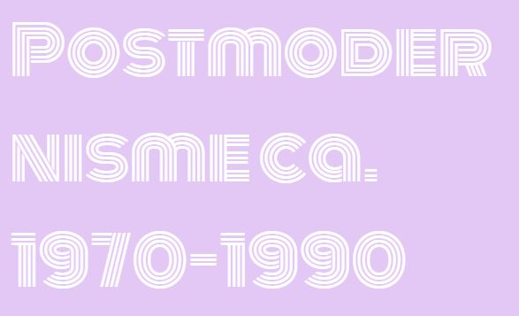
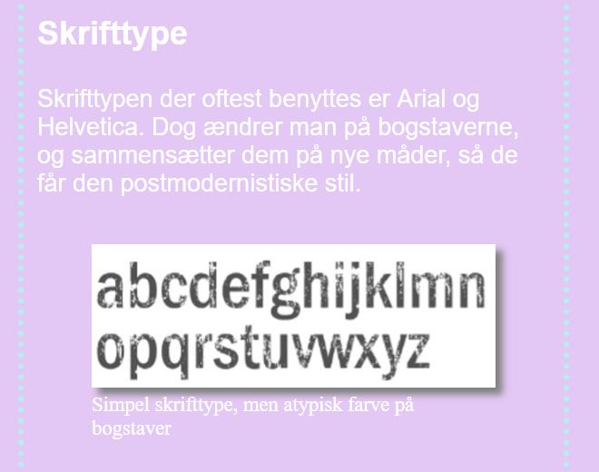

Tema 1
Responsive site
Åbn siteI tema 1 fik jeg givet stilarten postmodernisme, som jeg skulle undersøge. Her udviklede jeg et moodboard ved hjælp af Adobes inDesign. Jeg brugte min viden om stilarten til at opbygge et udgangspunkt af min hjemmeside i Adobe XD. Derefter lærte jeg at benytte mig af HTML og CSS, som jeg har brugt til kodning og styling af mit site. Efterfølgende blev jeg introduceret til flexbox, som jeg har brugt til at gøre mit site responsivt.





